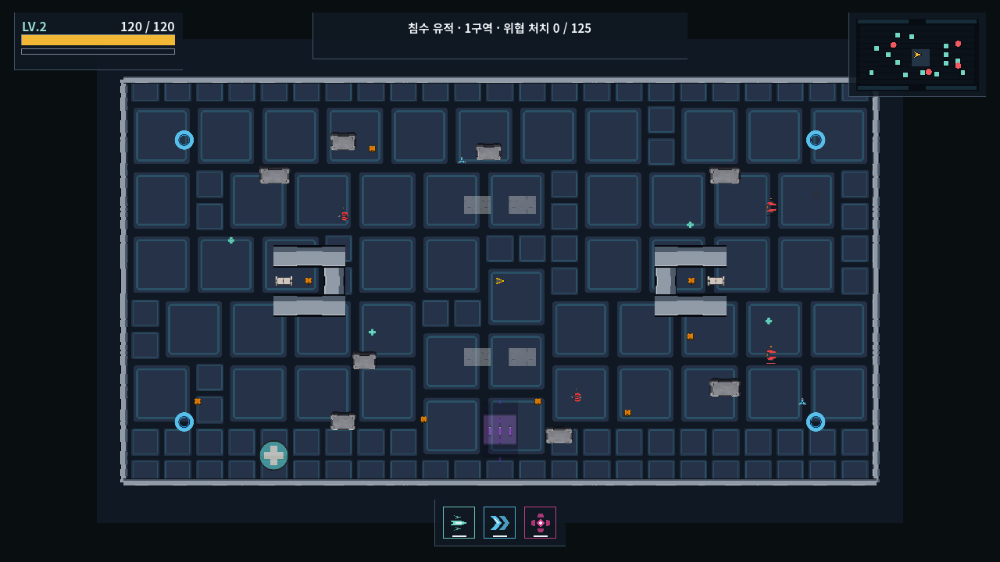
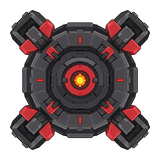
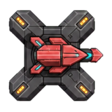
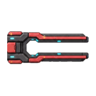
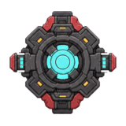
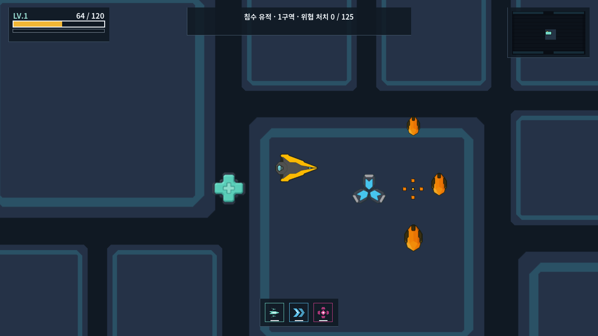
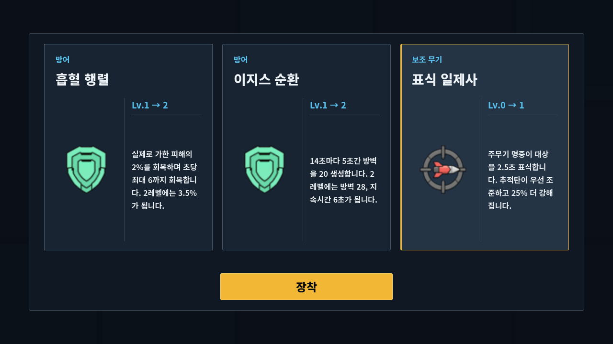

Fast free movement
The player should cross the field quickly. The map should not become a route puzzle.
Cardborne · Game Design Reset
This proposal starts from the real play style. The player moves fast, aims by hand, and fights a crowd. The field should give short safety, clear risks, and tools that work while the player keeps moving.
01 · Main decision
Repair and attack pads ask the player to stay in a small area. The rest of the game asks the player to keep moving. This is a rule conflict, not an art problem.
The player should cross the field quickly. The map should not become a route puzzle.
Cover blocks shots and direct rushes. It gives a short break. It does not tell the player where to travel.
They reward waiting, overlap with items and upgrades, and make a hurt player an easy target.
Teleport, shared hazards, and breakable devices create choices while the player stays in motion.
02 · Open field and cover
The earlier report said walls should make movement paths. That was wrong. Cardborne needs a wide combat field with sparse blockers and no dead ends.
| Rule | Reason | Simple test |
|---|---|---|
| No dead ends | A crowd can turn a pocket into an unavoidable death. | Every open area has at least two wide exit sides. |
| No long internal wall chain | A wall chain turns free combat into a route puzzle. | Internal blockers stay separate and leave wide gaps. |
| Cover blocks real danger | Cover is useful only when shots, sight, and direct bodies use the same blocker. | Player, enemy, shot, sight, and warning tests agree. |
| Keep boss space open | A large boss and a large crowd need room to turn. | The boss can pass around every major cover group. |
| No art-owned collision | The picture must not add an invisible or false wall. | Debug collision and the visible mass match at game size. |

03 · What changes when
Change content at a clear time. A moving hazard can move because its path is the rule. A wall should not move because the player uses it as trusted safety.
| World part | Chosen | Can move inside a stage? | Recommended life |
|---|---|---|---|
| Outer boundary | At run start | No | Keep for the full run. |
| Large cover islands | At run start | No | Keep for the full run so safety stays trusted. |
| Wear Collapse Tile | At run start | No | Keep its position and state for the full run. |
| Arc Surge | At stage start | No | Pick a safe strip position for the stage. It cycles in place. |
| Transit Gate pair | At stage start | No | Keep both ends fixed until the stage ends. |
| Neutral device | At stage start | No | Keep it until destroyed or the stage ends. |
| Unopened normal box | At stage start | Yes, off-screen only | Move one existing box after a timer. Do not make a new reward. |
| Meteor event | During selected stages | Yes | Move on a shown path. It is an event, not trusted cover. |
04 · Neutral terrain
Arc Surge and Wear Collapse do different jobs. Keep both. They should share who they can hit, how warnings work, and how the result is counted.
A fixed rectangle warns, turns on, and hits each actor once in that active window. It can hurt the player, normal enemies, and bosses.
Recommended proposalNew place: scheduled neutral line hazard.
Actor entries add wear. The third entry collapses the tile. A collapsed tile hurts the player, normal enemies, and bosses on entry and while they stay.
Recommended proposalNew place: run-long neutral terrain that changes state.
| Shared rule | Recommended result |
|---|---|
| Team | Neutral. It is not a red enemy and not a player skill. |
| Valid targets | Player, normal enemy, and boss. A special device can list a clear exception. |
| Warning | Show the exact live area before damage. A moving event shows its next path. |
| Score | Damage is recorded as environment damage, not player weapon damage. |
| Enemy death | Recommended: it still advances the stage kill count and drops normal experience. |
| Map marker | Do not use an enemy marker. Show it as explored world geometry only. |
| Art | Neutral gray body, clear danger edge, and one simple shape for its rule. |
05 · Fixed enemies
The current game has five fixed hostile roles. They do not chase the player, but they use enemy art, enemy markers, and enemy rules. Turn them into neutral devices that can also hit enemies.





| Current role | New world role | New rule | Why |
|---|---|---|---|
| Turret | Neutral Sentry | After a clear lock, shoot the nearest visible actor from either team. | The player can drag enemies into its fire. |
| Mine | Neutral Trigger Mine | Any actor can trigger it. A player shot can set it off early. The blast hurts both teams. | It becomes a timing tool instead of a red enemy. |
| Interceptor Tower | Neutral Counter Sentry | Merge it into the Sentry family. It reacts to nearby firing and locks the shooter from either team. | This reduces world-role count and keeps a different trigger. |
| Beam Sentinel | Neutral Sweep Emitter | Show one long line, then sweep or fire through it. Damage every actor in the line. | It creates a moving-space test with fair warning. |
| Barrier Generator | Gravity Core | Break it to pull nearby enemies toward the core for a short time. A harder neutral version can also pull the player. | It becomes an active terrain tool, not a support enemy. |
06 · New terrain ideas
A good terrain object creates a short plan: shoot it now, lead enemies near it, cross it, avoid it, or save it. It should not ask the player to stand inside a circle.
Trigger: break the core.
Effect: nearby enemies are pulled to the broken core for a short time.
Use: group enemies for a beam, EMP, mine, or boss attack.
Trigger: break the cell.
Effect: nearby normal enemies freeze. Bosses slow for a shorter time.
Use: make a short escape window without standing still.
Trigger: selected stage event.
Effect: a meteor moves through the field and hurts both teams.
Use: read the shown path and pull enemies into it.
Trigger: shoot or touch it.
Effect: nearby mobile enemies chase it for a short time, then it breaks.
Risk: too strong if every boss can be fully distracted.
Trigger: break it.
Effect: a large delayed blast hurts every actor.
Use: time the break, then leave before the blast.
Trigger: damage one of two linked nodes.
Effect: a warned line fires between the nodes and hurts both teams.
Risk: keep only one active link so the field stays readable.
It repeats the same waiting problem.
It overlaps the player's only active skill.
It can erase trusted cover and create a dead end during combat.
07 · Items and boxes
Items work better than support pads because the player can collect them and keep moving. New items should solve a short combat need, not copy a permanent upgrade.

08 · Upgrade reset
The current catalog has 41 cards. Some cards change play. Many cards only raise a number, repeat another system, or depend on a narrow object.
They add no new interaction. A number can help balance, but it should not pretend to be a new build.
Four optional secondary weapons share only two slots. The card UI does not show used or free slots.
The product rule asks for a “New behavior” row. Current offer data never gives the UI the difference needed to show it.
Elements and many other paths can all stack. The current rule meant to stop some combinations is not used.

| Current card or group | Problem | Recommended action |
|---|---|---|
| Hunter Firmware | Seekers prefer installations. Fixed installations are moving out of the enemy roster. | Remove this rule. Replace it with a target choice the player creates, such as marked targets. |
| EMP Focus | More damage and more radius do not create a new EMP decision. | Replace raw size with a behavior: expose stunned targets, pull shots, or create a short safe break. |
| Relay Overload | It only disables support units and installations for longer. | Remove after neutral-device conversion. |
| Mass Driver structure damage | Extra structure damage matters only for a narrow object set. | Remove the structure-only part. Keep a clear heavy-shot branch if its shot feel is strong. |
| Accelerator Coil | The card says speed and effective range. Its data changes speed only; shot life changes so travel distance stays the same. | Fix the false range copy. Keep speed only if it creates a real lead-aim choice. |
| Pickup Magnet | It is comfort, not a build identity. | Raise the base pickup comfort and remove the card. |
| Overclock Cycle | A hidden timer gives damage without a player action and repeats the attack pad. | Remove or tie the bonus to a clear action such as a close dodge or dash hit. |
| Aegis Cycle | A passive shield timer overlaps Static Aegis and needs another status timer. | Keep one earned barrier rule. Remove the passive duplicate. |
Forked Muzzle, Phase Lance, and Ricochet change where the player aims and how enemies should line up.
Ion Wake, Ram Pulse, Phase Shear, and Coolant Surge make the timing and path of dash matter.
Seeker, Ion Field, Orbit Blades, Wake Mines, and Escort Drone create visible build types.
Marked Salvo gives the manual gun and automatic Seeker one shared target decision.
Burn, poison, and chill can stay if each branch changes how the player chooses a target.
Tuned Thrusters and Dash Capacitor are simple, but they support the game's main action and are easy to feel.
| Lane | Question for the player | Example choices |
|---|---|---|
| Main gun style | How do I line up and control targets? | Precision, Barrage, or Heavy/Siege. Pick one clear main identity. |
| Hit effect | What extra result does a hit create? | Burn, poison, or chill. Pick one root, then evolve it. |
| Seeker target rule | What should the built-in Seeker hunt? | Closest threat, marked target, or a clearly defined world target. |
| Dash form | What does my escape path do? | Damage trail, arrival pulse, target mark, or short fire-rate window. |
| EMP form | What do I do after I press EMP? | Expose targets, gain one earned barrier, or create a second smaller pulse. |
| Extra weapon slot | Which automatic weapon supports my movement? | Choose up to two optional systems. Show “slot 1 of 2” before the choice. |
| Tactical response | What short weakness does this run need help with? | Hull, movement, cooldown, or pickup comfort. Use rarely, not as a forced choice seat. |
09 · Stage example
Fixed devices no longer count as enemy types. Each stage can use a small mobile enemy set and a small neutral world set. This table is an example, not final balance data.
| Stage | Mobile enemy set | Neutral world set | New lesson |
|---|---|---|---|
| 1 | Scrap Drone, Chaser, Shooter | Trigger Mine, one Arc Surge | Learn chase, range, and one shared hazard. |
| 2 | Chaser, Shooter, Controller | Neutral Sentry, Gravity Core | Lead enemies into device fire and group them. |
| 3 | Shooter, Rammer, Bulkhead Guard | Sweep Emitter, Cryo Cell | Read a long warning and make an escape window. |
| 4 | Rammer, Bulkhead Guard, Repair Tender | Meteor event, Trigger Mine | Fight around a moving neutral attack. |
| 5 | Bulkhead Guard, Splitter Barge, Repair Tender, one familiar role | Two known neutral systems | Combine learned rules. Do not add another new device. |
10 · Recommended change order
This order avoids making assets for systems that may be removed.
Decide support-pad removal, open-field rules, which system controls neutral devices, hazard life, box relocation, and the upgrade cut rule.
Make the new design the main rule source. The current specification still requires the old systems.
Remove repair and overdrive fields, their guide entries, and their world art use. Keep repair pickup and build upgrades separate.
Give neutral terrain and devices the same basic target, warning, damage, score, life, and movement rules.
Move their stage placement, combat targeting, guide category, markers, and art out of enemy systems.
Remove dead ends, validate open cover, add safe box relocation, and test one moving meteor event.
Start with behavior-changing cards. Remove narrow and duplicate cards before tuning values.
Show each approved role at real size and in real gameplay use. Do not return to the old isolated candidate-sheet method.
Recommended first test: enemies only. A harder true-neutral version can pull the player too.
Recommended: yes. The player should not lose progress for smart terrain use.
Recommended first test: no. Keep the gate as a clear escape and reposition tool.
Recommended: start small. Use only enough types that every warning is clear in a crowd.
11 · Sources and status
| Evidence | Local source |
|---|---|
| Current field life, support pads, neutral terrain, fixed threats, and 41-card requirement | docs/product/vehicle_game_spec.md:155–248, 321–399, 514–528 |
| Arc Surge, support schedules, Transit Gates, and Wear Collapse runtime | scripts/vehicle/vehicle_terrain_runtime.gd:6–24, 105–161, 213–324, 377–525 |
| Current five fixed roles by stage | scripts/vehicle/stages/vehicle_combat_stages.gd:45–60 |
| Current fixed enemy health, speed, role, and visual size | scripts/enemies/vehicle_enemy_archetypes.gd:20–29 |
| Current upgrade count, prerequisites, and offer rules | scripts/cards/vehicle_upgrade_catalog.gd:4–10, 46–138 |
| Current upgrade snapshot and missing behavior comparison data | scripts/cards/vehicle_upgrade_offer_presenter.gd:53–81 |
| Current optional-secondary capacity is not shown on cards | scripts/ui/vehicle_upgrade_choice_card.gd:452–496 |
| Current upgrade names and descriptions | localization/vehicle_stage.csv:190–330 |
| Binding visual and UI rules | docs/design/VISUAL_SYSTEM.md |
| Earlier map, effect, enemy, and boss audit | docs/reports/in-game-system-audit/index.html |
docs/design/VISUAL_SYSTEM.md.docs/design/cardborne-universal-art-style-reference.png.96ccf5d053e66dd3a102ccdf39daefd0b0c54b0e88d20428b7ba1c894f002889.C:/Users/BK/.codex/generated_images/019fbfe9-857e-7453-b72d-20908d848577/exec-0b8aa606-cf55-45c1-abb3-fb3df762b080.png, 2 August 2026, 12:13:44 KST.